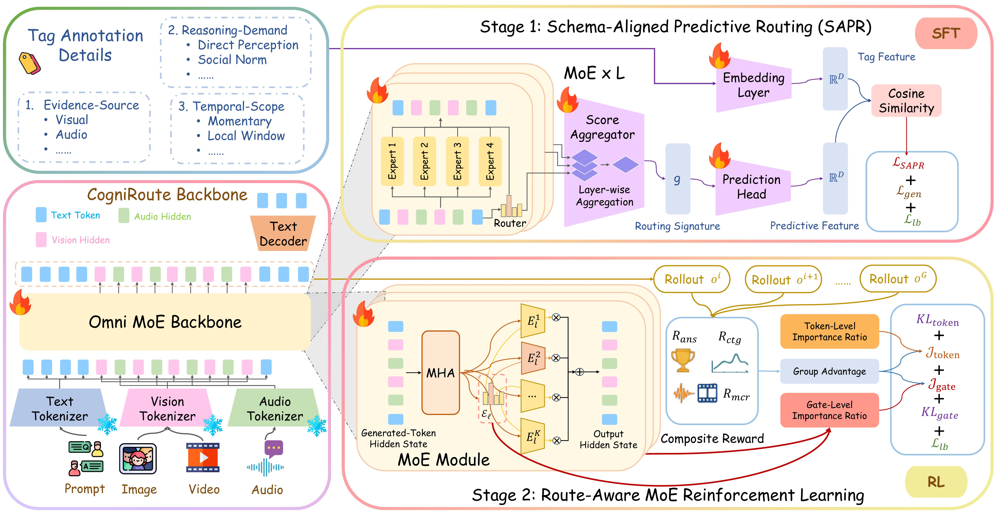
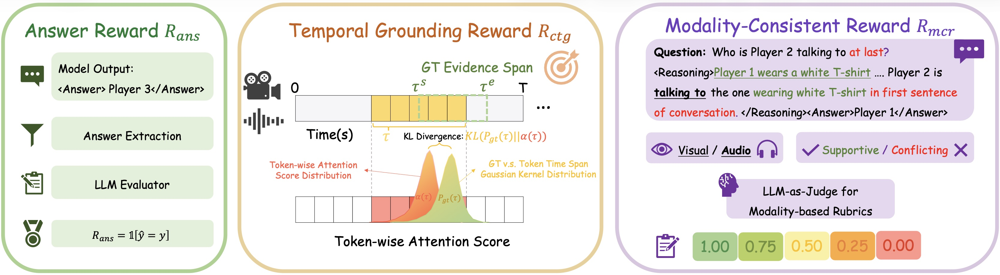
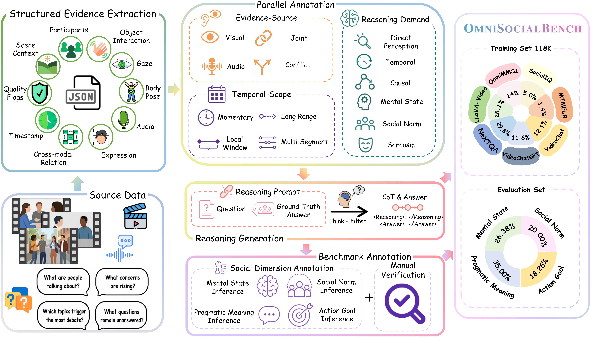
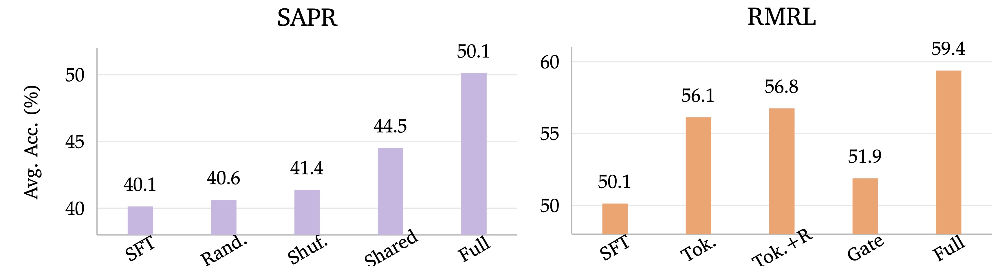
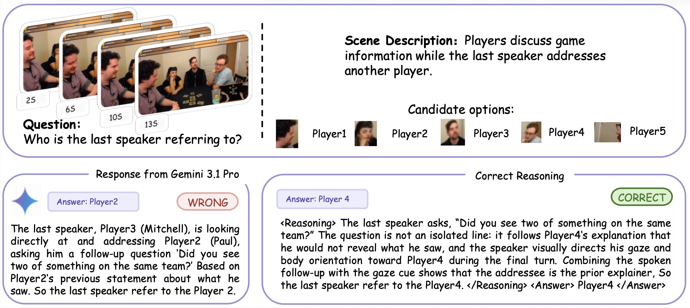

CogniRoute: Learning to Route Social Evidence in Omni-Modal Models
Abstract
Omni-modal models can ingest video, audio, and text, but unified access to multiple modalities does not guarantee that a model uses the right evidence. This gap is especially pronounced in social video question answering, where the answer may hinge on a gesture, vocal tone, temporal cue, or mismatch between what is said and what is visually expressed.
We introduce CogniRoute, a schema-guided Mixture-of-Experts framework for social omni reasoning. CogniRoute uses a training-only cognitive schema that factorizes each example by cross-modal relation, reasoning demand, and temporal scope, and aligns global routing signatures with this structure during supervised fine-tuning. We further introduce Route-Aware MoE Reinforcement Learning, which jointly optimizes token generation and expert allocation using rewards for answer correctness, modality-consistent reasoning, and cognitive temporal grounding. To support training and evaluation, we construct OmniSocialBench, a diagnostic social video QA resource with 118K structured training examples, grounded reasoning traces, schema labels, temporal evidence spans, and a manually verified evaluation split. CogniRoute achieves 59.38% average accuracy on OmniSocialBench, improving over the strongest proprietary baseline by 15.33 points and the strongest open-source omni baseline by 26.77 points, with the largest gains on questions requiring audio-visual coordination, conflict resolution, and temporally grounded social inference.
Method

Figure 2: CogniRoute Overview. Given a video, audio, and question, the omni MoE backbone produces modality-pooled, layer-wise routing distributions that are aggregated into a global routing signature. In Stage I, Schema-Aligned Predictive Routing (SAPR) aligns this signature with a training-only cognitive schema describing evidence source, reasoning demand, and temporal scope. In Stage II, Route-Aware MoE Reinforcement Learning (RMRL) jointly updates token generation and expert routing using rollout-level rewards for answer correctness, modality-consistent reasoning, and cognitive temporal grounding.
Schema-Aligned Predictive Routing (SAPR)
SAPR introduces an auxiliary supervised objective that encourages global routing patterns to encode the evidence structure of each sample. For each MoE layer, dense pre-top-k router distributions are pooled by modality (video, audio, question) to obtain stable, per-layer routing statistics. A learnable per-layer projection maps these statistics into a shared global routing signature g. Each training example carries a training-only schema tag set 𝒞 drawn from three axes:
- Evidence Source: Visual, Audio, Joint, or Conflict.
- Reasoning Demand: Direct Perception, Temporal, Causal, Mental State, Social Norm, or Sarcasm.
- Temporal Scope: Momentary, Local Window, Long Range, or Multi Segment.
The schema tags are converted into a target embedding via a learnable tag embedding matrix. A lightweight prediction head projects the routing signature into the schema embedding space, and the SAPR loss ℒSAPR is a cosine alignment between predicted and target embeddings. The supervised objective combines generation loss, MoE load balancing, and SAPR alignment.
Route-Aware MoE Reinforcement Learning (RMRL)
RMRL assigns rollout-level reward to entire generations and propagates feedback to both token generation and expert routing. For each input, the policy generates a group of rollouts, and each rollout receives a composite reward ℛ = λansℛans + λmcrℛmcr + λctgℛctg that supplies outcome-, process-, and evidence-level feedback. The three components are complementary: each isolates one failure mode that answer accuracy alone cannot diagnose.

Figure 4: Visualization of the reward design. The overall reward consists of three complementary components: the answer reward ℛans encourages correct final answers; the Cognitive Temporal Grounding reward ℛctg guides the model to attend to the annotated temporal evidence span; and the Modality-Consistent Reasoning reward ℛmcr promotes reasoning grounded in the required visual and/or audio evidence.
Answer Correctness (ℛans)
A deterministic, judge-free binary reward. After extracting the final answer from the model output, we normalize it (lowercase, strip punctuation/articles, collapse whitespace) and compare against the ground-truth answer or any provided alias. A correct answer scores 1, otherwise 0. ℛans anchors the policy to the task objective and gates ℛmcr to avoid rewarding fluent but incorrect rationales.
Modality-Consistent Reasoning (ℛmcr)
A frozen LLM-as-judge reward (Gemini 3.1 Pro) that scores how well the
generated <Reasoning>…</Reasoning> span grounds the answer in the
required modality, using annotations from the Structured Evidence Extraction pipeline. The
judge follows a five-level rubric {0, 0.25, 0.5, 0.75, 1.0}:
- 1.00 — reasoning explicitly uses the required modality with concrete observations and clearly links them to the answer; for dual-modality cases, also correctly characterizes the cross-modal relation (supportive vs. conflicting).
- 0.75 — largely modality-consistent but incomplete, weakly connected to the answer, or only partially captures the cross-modal relation.
- 0.50 — partially satisfies the requirement (e.g., relies on only one of two required modalities, or names the correct modality without concrete evidence).
- 0.25 — weak, vague, or ambiguous modality cues; mixes correct and incorrect evidence sources.
- 0.00 — fails to ground the answer in the required modality, relies on the wrong evidence source, or contains no valid reasoning span.
Crucially, the judge is instructed to reward concrete modality-specific observations (e.g., "the speaker sounds hesitant", "the person smiles while stepping back") rather than superficial keyword matches such as "based on the video" or "from the audio". The judge is frozen and uses the same prompt across all experiments, ensuring stable optimization signals.
Cognitive Temporal Grounding (ℛctg)
A process-level reward that uses the model's own causal attention as a differentiable proxy for temporally grounded reasoning. Native attention from a short reasoning suffix to audio-visual input tokens is averaged over deep layers and heads, then pooled by temporal index into a focus distribution α(τ) over the physical timeline. Annotated evidence spans are converted into a smooth target Pgt(τ) via a Gaussian proximity kernel, and the reward is ℛctg = exp(−γ DKL(Pgt ∥ α̃)). High reward is obtained only when the final reasoning state places attention mass near the annotated evidence span, providing feedback in cases where ℛans alone cannot distinguish genuine cue use from shortcut prediction.
Joint Token-and-Gate Optimization
Rollout rewards are converted into group-relative advantages. The token branch uses a clipped GRPO surrogate over generated tokens, while a parallel gate branch scores selected top-k expert sets via the dense pre-top-k router likelihood, enabling rollout-level reward to update expert allocation. Both branches share the same advantage, KL regularization is applied to a frozen reference model for both language and router, and standard load balancing is preserved.
OmniSocialBench: Diagnostic Social Omni Reasoning

Figure 3: OmniSocialBench Dataset and Annotation Pipeline. OmniSocialBench augments video QA examples with structured audio-visual evidence, schema labels, grounded reasoning traces, and temporal evidence spans. The pipeline first extracts observable social cues — participants, scene context, gaze, expression, body pose, gesture, object interaction, speech content, speaker changes, laughter, silence, and tone-relevant acoustic events — then assigns cross-modal relations, reasoning demands, and temporal-scope annotations, and finally generates evidence-grounded rationales.
OmniSocialBench contains a 118K-example structured training split sourced from social and egocentric video corpora (e.g., SocialIQ, SocialMM, LLaVA-Video, NeXT-QA, VideoChatGPT, MTM, Charades), and a manually verified evaluation split covering four social inference dimensions:
- Mental State Inference: reasoning about emotions, beliefs, and intent.
- Pragmatic Meaning Inference: implicature, indirect speech, sarcasm.
- Action Goal Inference: the underlying purpose of an observed action.
- Social Norm Inference: conventions, expected behavior, social rules.
Every evaluation example is manually verified for answer validity, evidence consistency, schema correctness, reasoning support, temporal grounding, and social-dimension assignment.
Quantitative Results
Table 1: Social understanding results on OmniSocialBench across four social inference categories. CogniRoute achieves the best result in every category, surpassing Gemini 3.1 Pro by 15.33 points on average.
| Model | Social Norm↑ | Action Goal↑ | Mental State↑ | Pragmatic Meaning↑ | Avg↑ |
|---|---|---|---|---|---|
| GPT 5.4 | 14.37 | 20.13 | 18.96 | 18.57 | 18.12 |
| Qwen 3.6 Plus | 15.00 | 26.17 | 14.69 | 19.29 | 18.50 |
| GLM 5V Turbo | 14.37 | 18.12 | 13.27 | 17.50 | 15.88 |
| Baichuan-Omni-1.5 | 14.37 | 12.75 | 12.80 | 12.86 | 13.12 |
| OmniVinci | 18.75 | 20.81 | 26.07 | 21.07 | 21.88 |
| Qwen3 Omni | 26.11 | 33.02 | 38.97 | 31.44 | 32.61 |
| MiMo V2 Omni | 30.63 | 32.89 | 31.28 | 30.36 | 31.13 |
| Qwen 3.5 Omni | 31.25 | 30.87 | 36.02 | 28.57 | 31.50 |
| Gemini 3.1 Flash | 27.50 | 47.65 | 43.33 | 41.79 | 40.43 |
| Gemini 3.1 Pro | 33.33 | 36.84 | 60.00 | 43.90 | 44.05 |
| CogniRoute (Ours) | 58.13 | 66.44 | 60.18 | 55.71 | 59.38 |
Table 2: Audio-visual benchmark comparison between Qwen3-Omni-30B and CogniRoute across 10 public benchmarks spanning audio-visual, audio-only, and video-only understanding. CogniRoute improves on most audio-visual and video-only tasks, indicating that schema-guided routing strengthens cross-modal selection and integration.
| Model | AV-SpeakerBench↑ | OmniBench↑ | MMVU↑ | WorldSense↑ | Daily-Omni↑ |
|---|---|---|---|---|---|
| Qwen3 Omni 30B | 54.1 | 55.5 | 59.8 | 54.0 | 73.6 |
| CogniRoute (Ours) | 56.2 | 56.7 | 60.7 | 53.8 | 74.3 |
| Model | AV-Odyssey↑ | MVBench↑ | MMAU↑ | OmniVideoBench↑ | Video-MME-v2↑ |
|---|---|---|---|---|---|
| Qwen3 Omni 30B | 34.7 | 69.5 | 75.4 | 38.4 | 36.5 |
| CogniRoute (Ours) | 36.8 | 70.2 | 73.2 | 38.9 | 36.8 |
Figure 5: Core component ablations. Average accuracy across SAPR design choices and RMRL token/gate optimization. SAPR improves the SFT baseline from 40.13 to 50.13; corrupted-schema variants yield only marginal gains, confirming that the benefit comes from aligning routing with the correct evidence structure. Starting from the SAPR-trained checkpoint, the full token-and-gate RMRL objective lifts accuracy to 59.38, with explicit expert allocation contributing beyond token-level RL alone.

Qualitative Analysis: Discourse-Grounded Reference Resolution

Figure 6: Qualitative comparison between Gemini 3.1 Pro and CogniRoute on a manually verified case from OmniSocialBench. The clip shows several players discussing game information, with the last speaker addressing another player. Given the question "Who is the last speaker referring to?" with five candidate referents (Player1–Player5):
- Gemini 3.1 Pro (Player2 — incorrect): identifies a locally plausible cue and treats the final utterance "Did you see two of something on the same team?" as a follow-up to Player2's earlier statement. It maps the question to a short-range, single-utterance reference, missing the discourse context.
- CogniRoute (Player4 — correct): links the final question to Player4's prior explanation that he would not reveal what he saw, and combines this with the speaker's gaze and body orientation toward Player4 during the final turn. The cross-modal, discourse-level grounding identifies Player4 as the addressee.
This case exemplifies the general pattern observed across Appendix E: Gemini 3.1 Pro often identifies a locally plausible cue but maps it to the wrong evidence structure, while CogniRoute's schema-aligned routing — trained over evidence source, reasoning demand, and temporal scope — favors discourse-level reference tracking, multi-party turn-taking, and long-range affect continuity over single-utterance shortcuts. The qualitative outcome complements the quantitative gains in Table 1 by showing how CogniRoute improves evidence selection, cross-modal grounding, and temporal reasoning in social video question answering.
BibTeX
@article{shen2025cogniroute,
title={CogniRoute: Learning to Route Social Evidence in Omni-Modal Models},
author={Shen, Yifan and Liu, Jiateng and Li, Xinzhuo and Liu, Yuanzhe and Li, Bingxuan and Yang, Houze and Jia, Wenqi and Li, Yijiang and Yu, Tianjiao and Rehg, James Matthew and Cao, Xu and Lourentzou, Ismini},
journal={arXiv preprint},
year={2025}
}